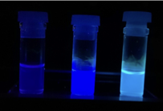
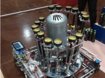
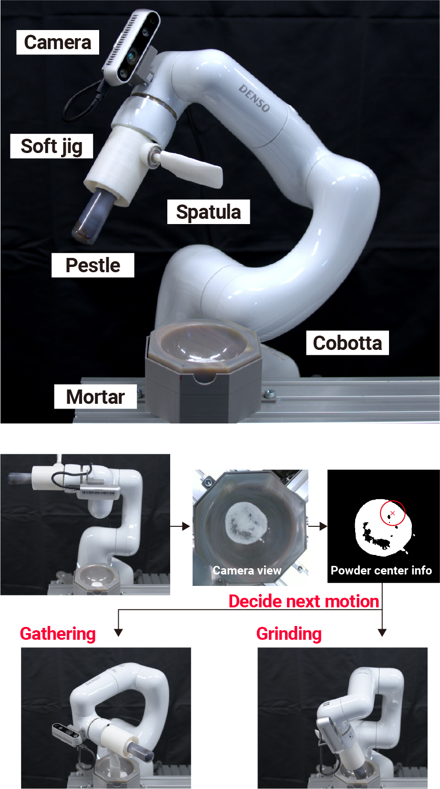
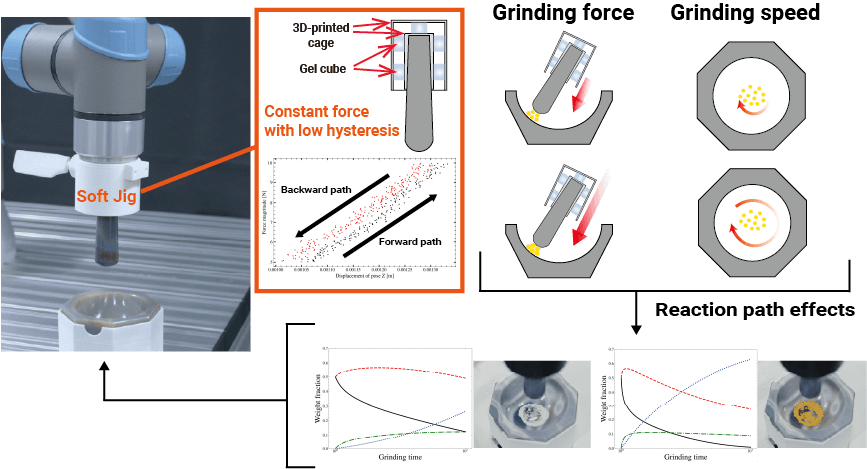
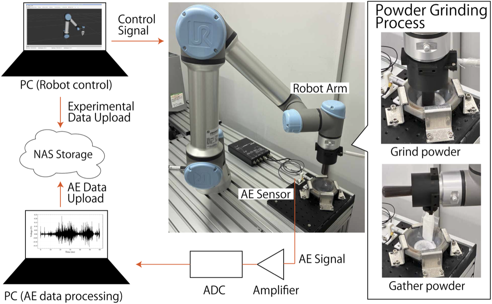

ゼロからのロボットアーム入門
大阪大学 中島優作
材料DX Boot camp 2026 Day 2 ハンズオン
2026年11月11日 名古屋駅前イノベーションハブ
自己紹介

ポリマー合成

高専ロボコン
（修士）
自動化
（博士）
実験ロボット
自動化
化学とロボットの両方がバックグラウンド。今は粉体を扱う実験ロボットを研究しています



このハンズオンの地図
今日のハンズオン
- TCP・座標系の設定
- TP（ティーチングペンダント）で動かす
- Python から動かす
- 指令の種類・ブレンド・精度
持ち帰ってできること
研究室のロボットで…
- サンプルをつかんで決まった場所に置く（ピック&プレース）
- Python の実験スクリプトにロボット動作を組み込む
- 位置がずれたときに原因の見当がつく
このハンズオンの範囲
- ロボットアームの動作生成でよく使われる仕組みを学んでいきます。
- コードなどはUniversalRobotの例を扱います(他のメーカーでも概ね同じ機能があるはずです)。
- ブラウザで動くアプリで実際に動きを確かめます(インストール不要)。
オススメ参考資料
このスライドと教科書の併用をおススメします

産業用ロボットtheビギニング - 産業用ロボットの基礎的な情報を網羅

イラストで学ぶロボット工学 - 学部生向けの教科書, 本格的な制御の本だが読みやすい
ロボット動作の方法

ティーチングペンダント
- ロボット用の端末
- 最近はLANを介してソフトウェアで行うものも多い

プログラミング
- Python等で動作コードを作成
- TPでは対応していない機能が使える
アプリを開いてください
→ 全画面表示
この後の説明はアプリを見ながら行います
動作作成の手順
①〜③をアプリで順に試していきます
ステップ①TCPと重心

- エンドエフェクタ: 手先のツール
- TCP: 実際に動かしたい点と向き
例) 乳棒の先端 - 重心: ツールの質量がかかる点
- どちらもフランジからの位置で登録
- 重心は質量とセットで設定する
複数のTCP

出典: Y. Nakajima et al., "Robotic Powder Grinding with a Soft Jig for Laboratory Automation in Material Science," IROS 2022, Kyoto, Japan, pp. 2320-2326, doi: 10.1109/IROS47612.2022.9981081
- それぞれのツールに対してTCPを登録しておくと便利
例)TCPを乳棒とヘラの先端に設定
場面によってTCPを切り替えることで最小限のプログラムの変更で複数のツールが使える
エンドエフェクタの重心設定
設定するのは質量と重心位置（フランジ基準）
重心設定が役に立つ場面
- フリードライブでの重力補償
- 手先のフォーストルクセンサ値の重力補償
- 加減速の調整
ステップ②ロボットの座標系

関節座標系
関節それぞれの角度を指定

ベース座標系
ロボットの根本を基準にTCPの座標を指定

ツール座標系
現在のTCPの座標系を基準に次のTCPの座標系を指定
座標系による動きの違いを確認↓
ジョグ動作
- 関節や手先を少しずつ動かす動作をジョグ動作という（薄い色：動かす前）
- アプリのジョグ機能（ボタン長押しで連続移動）で、3つの座標系での動きの違いを確認できる
座標系の表現↓
TCPの姿勢表現
姿勢(pose) = 位置 + 向きで表すことが多い
基本はXYZの座標系に対する位置と向きを考える
→ 全画面表示
ステップ③動作指令は2分類
経路を規定しない・関節空間で補間
→ UR:
movej()
TCPの経路形状を規定・直交空間で補間
→
movel()
→
movec()
詳細は以下↓
PTPの詳細

- 関節空間での補間（UR:
movej） - 各関節が最も速く目標に到達するように動く(グラフ)
- 手先の軌道は予測できない
- 障害物がない環境で使用する動作モード
LINの詳細

- CPの直線（UR:
movel） - 手先が直線的に移動
- 関節の可動範囲や特異点により動きに制限
- 部品挿入や溶接で使用
- PTPよりも時間がかかる
CIRCの詳細

- CPの円弧（UR:
movec） - 中間点を指定して円弧を描く
- 障害物回避や滑らかな動作で使用
- 角を持つ物体の加工などに有効
- 3点（始点・中間点・終点）が必要
URScriptでの対応
| 分類 | 関数 | 位置の与え方 |
|---|---|---|
| PTP | movej(q, a, v, t, r) | 関節角 [j0..j5] |
| LIN | movel(pose, a, v, t, r) | TCP姿勢 p[x,y,z,rx,ry,rz] |
| CIRC | movec(pose_via, pose_to, a, v, r) | 経由点＋終点のTCP姿勢 |
movej([0, -1.57, 1.57, 0, 1.57, 0], a=1.4, v=1.05)
movel(p[0.3, -0.2, 0.25, 0, 3.14, 0], a=1.2, v=0.25)
movec(p[0.35, -0.1, 0.25, 0, 3.14, 0], # 経由点
p[0.3, 0.0, 0.25, 0, 3.14, 0], # 終点
a=1.2, v=0.25)
- 引数の型に「関節空間 / 直交空間」の違いがそのまま現れる
※ movej に pose を渡すと内部で逆運動学を解き、関節空間で補間します
ブレンド半径
- ブレンド半径が無いと教示点ごとに止まる
- ブレンド半径を設定すると、教示点で止まらず手前で丸めて通過
- 点を正確に通過しないので、細かい動きはできない
- 動作精度と動きの滑らかさのトレードオフで調整する
アプリの「ブレンド半径」タブで r を変えて試してみましょう
ブレンドの指定はメーカーで違う
| メーカー | 呼び方 | 指定する量 | 例 |
|---|---|---|---|
| UR | blend radius | 丸めの半径 [mm] | r=10mm |
| ABB | zone data（fly-by point） | 教示点からのゾーン半径 [mm] | z10 |
| KUKA | approximate positioning | 距離 / 速度 / 時間から選択 | mm, %, s |
| FANUC | termination type CNT | 経路に対する割合（無次元） | CNT100 |
| 安川 | PL（position level） | 離散レベル 0〜8 | PL=5 |
- 概念は同じでも「半径」で指定するのはURなど一部だけ
- このスライドでは概念を「ブレンド」、URでの指定量を「ブレンド半径」と呼びます
ブレンド半径と振動
- 速く動かしたいとき、角で急に止めるよりブレンド半径で丸めて通過したほうが振動を抑えられる
- ただし r が小さすぎると角で加速度が跳ぶ（アプリの角加速度グラフ）
- そもそも振動を抑えたいなら、振動しにくい経路を計画するのが有効
プログラムから動かす(URの例)
Python ライブラリ ur_rtde で、前の URScript と同じ動作を書く
- 関数の対応は同じ（moveJ / moveL）。違いは ①引数順が (speed, acceleration)、②ブレンドは経路で渡す、③moveC が無い
ロボットアームの精度について

- 仕様書の値は繰り返し精度（ISO 9283）
- 指令した位置に正確に行ける絶対位置決め精度ではない！
位置がズレる原因↓
位置がズレる原因は3つ
① 設計と実機のズレ
- リンク長の公差、原点オフセット
- TCP・ベース設置の測定誤差
目安: mm オーダー
毎回同じだけずれる
→ 校正・ティーチングで吸収できる
② 時間変動
- 暖機による熱ドリフト
- 経年でバックラッシュが増える
目安: 数十〜数百 µm
校正では取れない
③ 動作条件
- 進入方向（バックラッシュ）
- 速度、ペイロード、姿勢
目安: 数十〜数百 µm
同じ点でも指令の出し方で変わる
※ 目安はオーダー感。機種・条件で大きく変わる
ラボのピック&プレースなら
②③はそれほど大きく影響しないことが多い
位置制御だけでは難しいタスク
- 狭い穴に部品を入れる（Peg-in-hole）は位置制御だけだと難しい
- はめあいのすき間は片側 0.01 mm 程度
- ロボットの繰り返し精度は ±0.03 mm 程度（UR5eなど）
- すき間 < 誤差 → 縁に当たって入らない
どういった工夫があるのか↓
RCC(Remote Center Compliance)
- 部品を嵌め合わせるなどの作業のずれを機械的に補償するツール
- RCC自体はコンプライアンス制御に置き換わっている印象だが、柔らかい部品で緩衝する考えは治具づくりで有用
コンプライアンス制御
- ばねのような制御をセンサでソフトウェア的に実現
- 手先のフォーストルクセンサを使う場合と使わない場合があります
フォース制御
- 任意の軸だけ一定の力をかける制御
- 手先にフォーストルクセンサが必要です
フォース制御とコンプライアンス制御の違い
→ 全画面表示
- フォース制御 → 一定の力をかける
- コンプライアンス制御 → ばねのように柔らか
もっとしっかり勉強したい人へ
ゼロからのROS入門
- ROS を使ったアームの位置制御・力制御、カメラ、シミュレーションなどを体系的に学べます
ありがとうございました
質問などあればお気軽にご連絡ください
メール: yusaku_nakajima [at] ap.eng.osaka-u.ac.jp